**Programming Assignment 5 - Path Tracing, Microfacet Models and Multiple Importance Sampling**
Feedback
========
This has been the most challenging assignment. Yes, it was very interesting, but honestly, I would not have been able to do the assignment without the help of psuedocodes posted on Piazza. The learning does become alot better when we implement the algorithms. Though, I would like to truly ask for more notes about edge cases and why they need to be covered, as for me, I was pretty much doing more of an trial and error method. Also, more worded explanation than in the PBRT book which could be used as references would be very helpful. I have truly put in alot of time, though not been able to successfully pass all the cases in the warptest, due to which my renderings seem to give nans in few cases.
Exercise writeup
================
**Part 1: Microfacet BRDF**
Part 1.1 Evaluating Beckmann Distribution
According to the Beckmann distribution formula, Warp::squareToBeckmannPdf function is implemented. The test cases for infinity, or very less values or divide by zero are handled.
Part 1.2 Sampling the Beckmann Distribution
Using the CDF and inverse methods, theta and phi were found. Later, the spherical coordinate system is converted to xyz coordinate system to give the sampling.
Even though the formula is given upright but the challenges are that a few cases may be missing as the ttest.microfacet tests are not passing. This may be the reason why ajax smooth and rough images may be slightly different than references.
Distribution and chi test is shown below:
![Figure [1]: Square to Beckmann Warping](images\stb.png)
Warptest is run to give the successful test:
![Figure [2]: Square to Beckmann Warping](images\squareToBeckmann.png)
![Figure [3]: Chi-square Test for Square to Beckmann Warping](images\squareToBeckmannchitest.png)
Part 1.3 Evaluating the Microfacet BRDF
The microfacet understanding was done through the PBRT book. That made sure the formula was applied directly, though the edge cases were not understood completely. A trial and error method was used. Can I ask for help over the same, to pass the 2 tests of the ttest.microfacet where alpha is 80 and above.
Part 1.4 Sampling the Microfacet BRDF
Again generarting samples is fairly formula based. I faced challenge in offsetting and rearranging the changed sample range, though with help over the internet I could figure it out.
The validation test screenshots are attached underneath:
![Figure [4]: chi2test-microfacet test](images\chi2test.png)
![Figure [5]: ttest-microfacet test](images\ttest.png)
Using whitted integrator to render rough and smooth ajax:
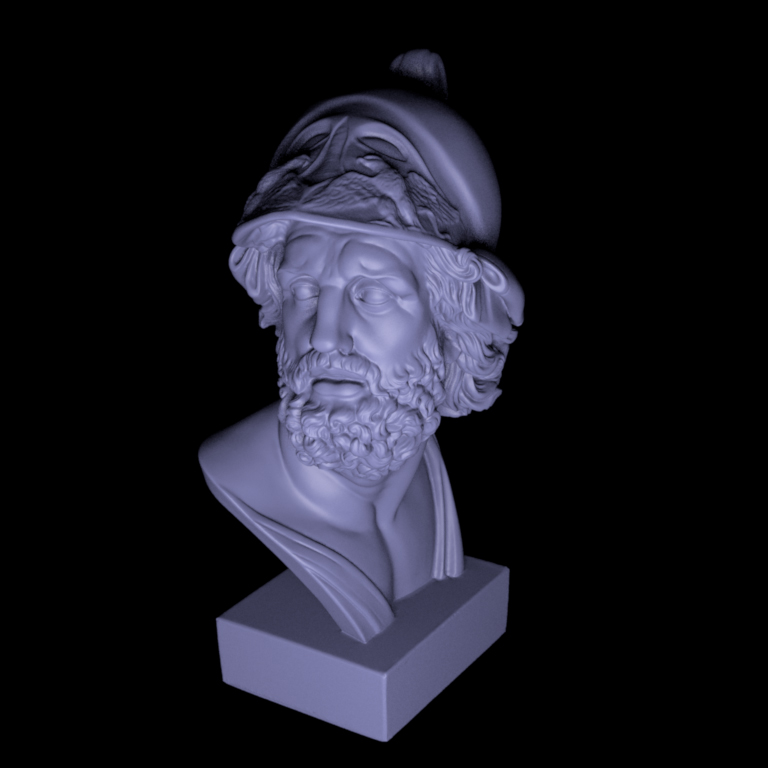
Code running screenshot is also attached beneath:
![Figure [6]: Whitted-style Ray Tracing for Ajax Rough Scene](images\ajaxroughcode.png)
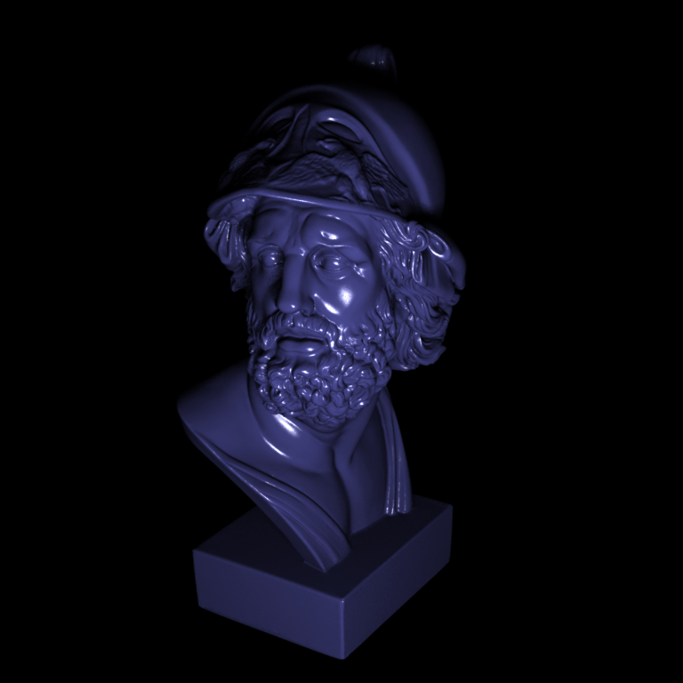
Code running screenshot is also attached beneath:
![Figure [7]: Whitted-style Ray Tracing for Ajax Smooth Scene](images\ajaxsmoothcode.png)
**Part 2: Simple Path Tracer**
Design Choices
This is implemented in a file; path_simple.cpp. An initial recursive approach of the path tracer was taken, though renderings were not following the references. Then, the infinite loop using Russian Roulette was adopted which became easier to understand. The simple path tracer follows the following pseudocode for better understanding and the code is also commented respectively.
1. alpha = 1, recursive ray is made which is initially the copy of the ray.
2. while true
2.1 if recursive ray intersects the scene,
2.1.1 select a random emitter and sample a point on it and get direction of current intersection to the sampled point
2.1.2 if direct intersection occurs or if the second last intersected mesh is specular then,
radiance is radiance + (alpha * radiance at the sampled point)
2.1.3 if the intersected mesh is diffuse material then,
make this new ray and if the new ray doesn't hit the scene and new intersected mesh is the same as the current intersected mesh then,
get bsdf of this sampled point, calculate the geometric term, pdf and radiance from emitter
if the sampled direction is downwards, radiance will be radiance + (alpha * radiance from emitter * geometric term * bsdf * number of emitter meshes) / pdf
2.1.4 sample the bsdf
2.1.5 check if Russian Roulette is less than 0.95
if yes, then newray becomes the recursive ray and alpha is multiplied into brdf's at each intersected mesh, factored by Russian Roulette.
if not, then break out of the loop
if recursive ray doesn't intersect the scene, then break out of the loop
2.2 sample a new sample for Russian Roulette
2.3 also check for whether intersected mesh is specular for the next iteration
Challenges
The case for when it hits the same mesh again was not considered. This was making the image extremely bright. Also, when number of emitters were not considered in the final radiance, then the image was becoming dull.
Underneath are the test scenes to be rendered:
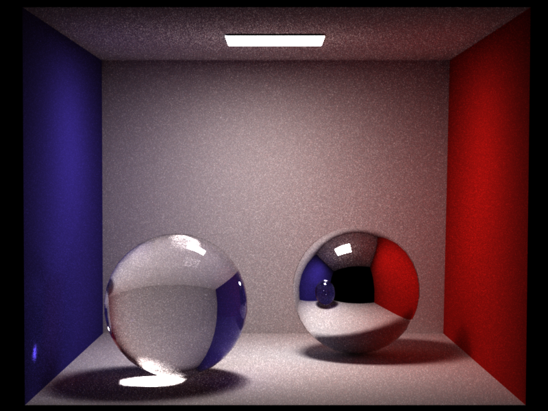
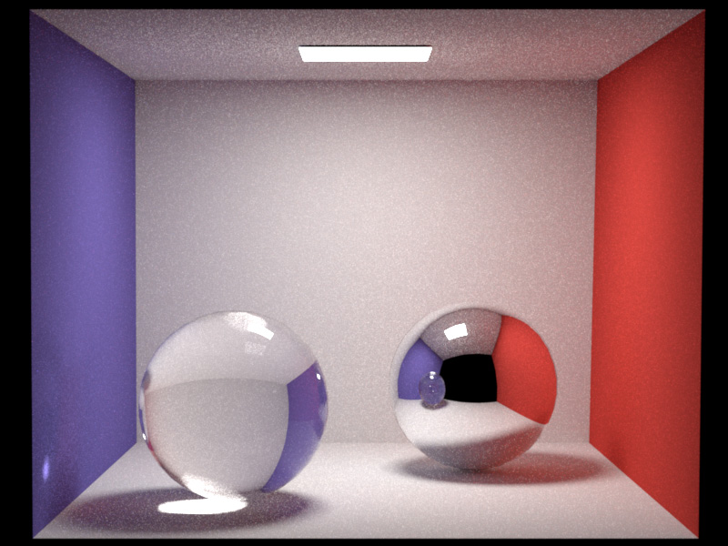
Code running screenshot is also attached beneath:
![Figure [8]: Path-simple Ray Tracing for cbox](images\cboxcode.png)
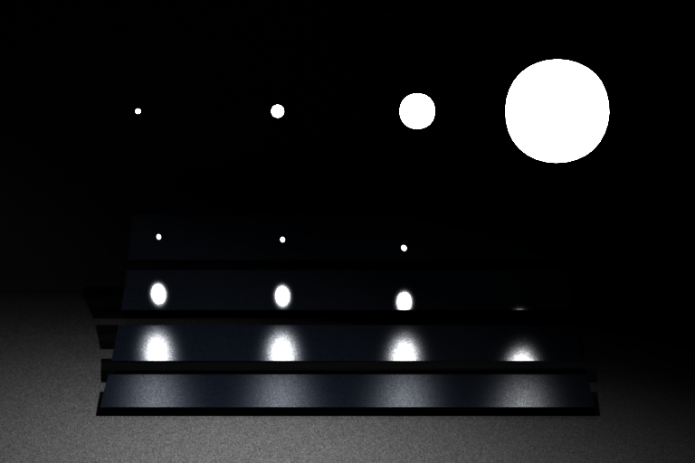
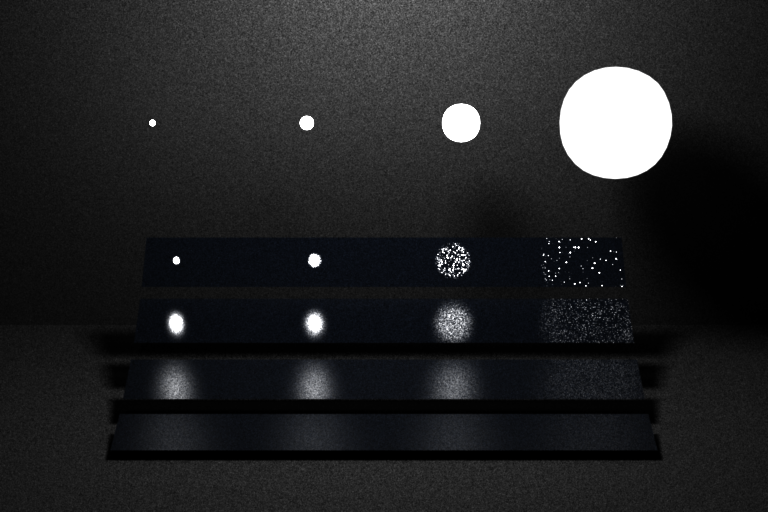
Code running screenshot is also attached beneath:
![Figure [9]: Path-simple Ray Tracing for veach_path_simple](images\veachpathsimplecode.png)
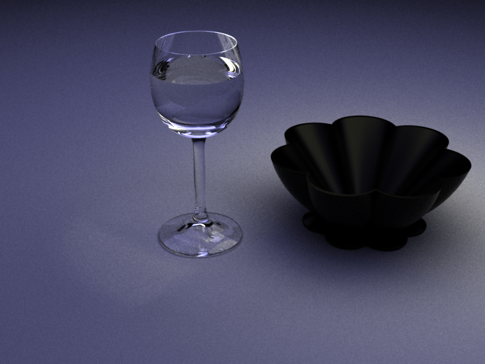
Code running screenshot is also attached beneath:
![Figure [10]: Path-simple Ray Tracing for table_path_simple](images\tablepathsimplecode.png)
**Part 3: Path tracer with Multiple Importance Sampling**
Design Choices
This is implemented in a file; path.cpp. This also follows the same simple path tracer, though when a diffuse material is hit, along with sampling the emitter a brdf is also sampled and mis_weight is used to tell the contribution of each of these two sampled features. Final radiance at this point will be contributions of both the radiance got from sampled point on light and brdf.
Challenges
The rendering for veach is not right, as the cases are not being followed. As the renderings for table and cbox are coming right, it has to do with the 2 test cases not being followed.
Underneath are the test scenes to be rendered:
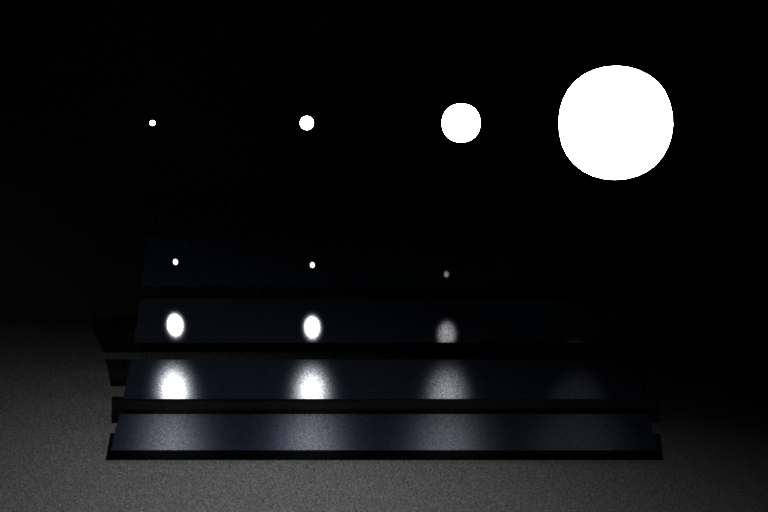
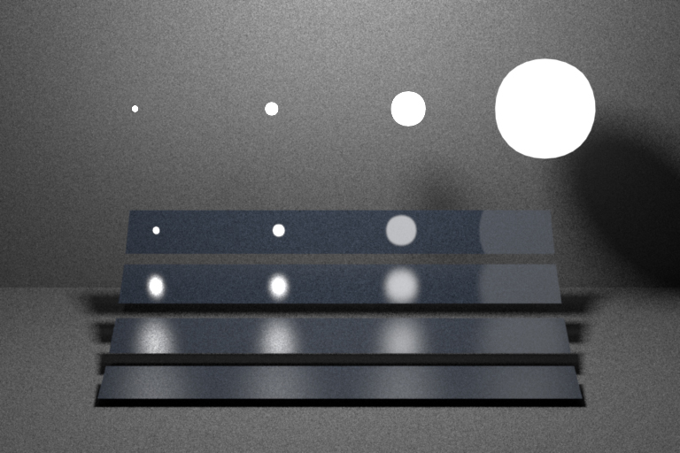
Code running screenshot is also attached beneath:
![Figure [11]: MIS Ray Tracing for veach_path_simple](images\veachmiscode.png)
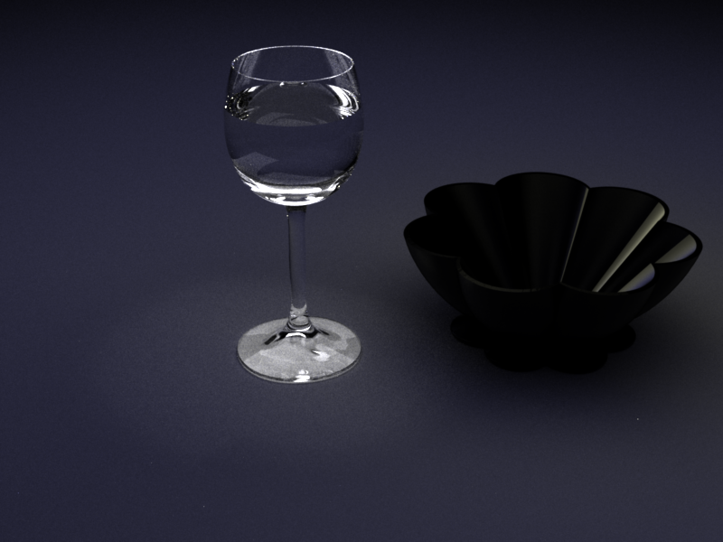
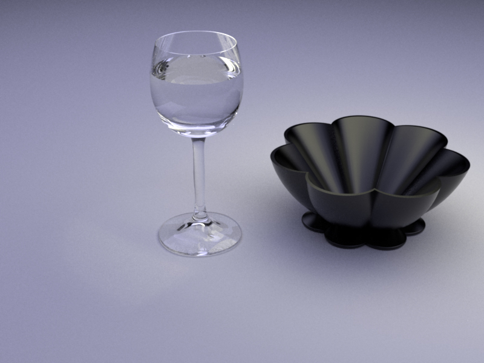
Code running screenshot is also attached beneath:
![Figure [12]: MIS Ray Tracing for table_path_simple](images\tablemiscode.png)
Other Details
================
**Time spent on each task**
*Task 1*
Understanding what is being expected
30 hours
*Task 2*
Microfacet BRDF
24 hours
*Task 3*
Simple Path Tracer
20 hours
*Task 4*
Path tracer with Multiple Importance Sampling
15 hours
*Task 5*
Documentation
3 hours